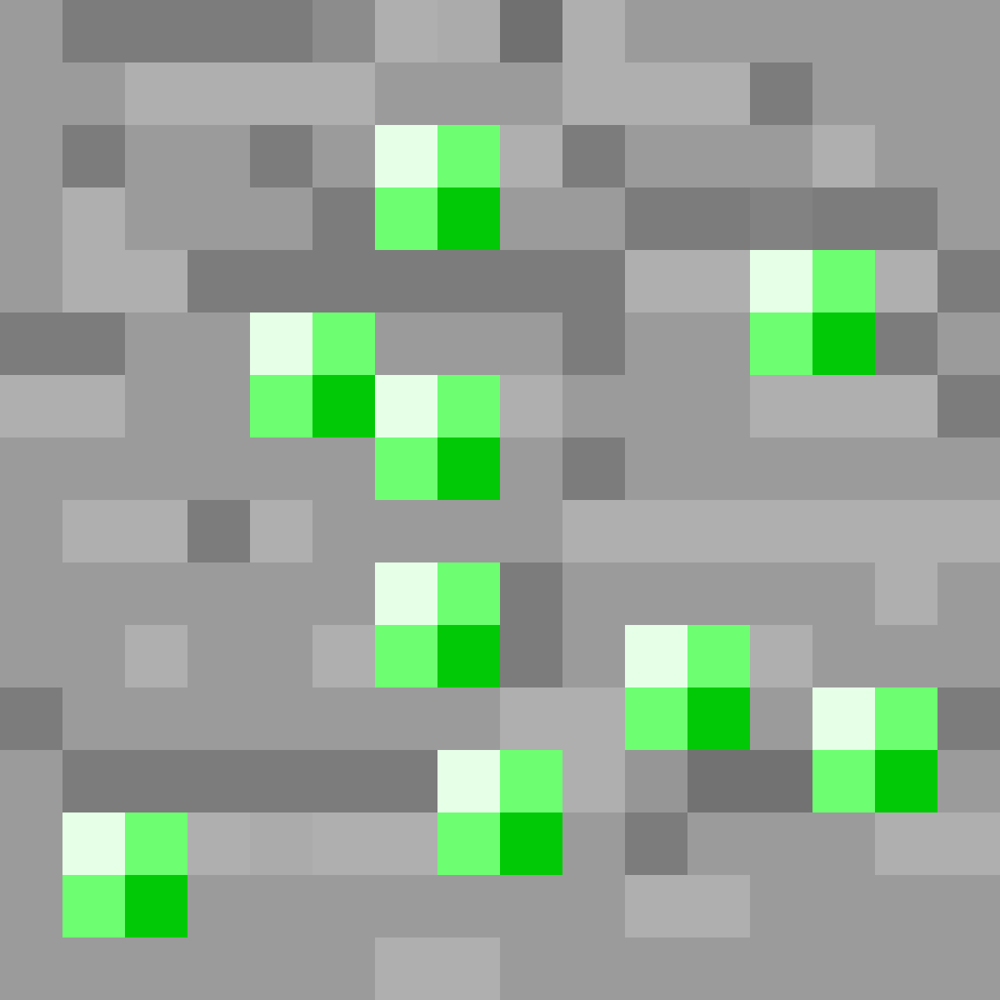
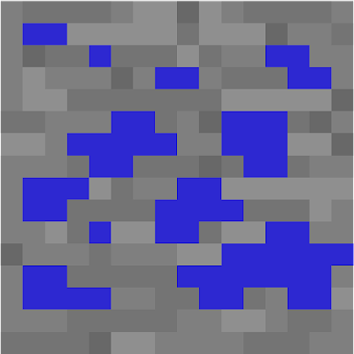
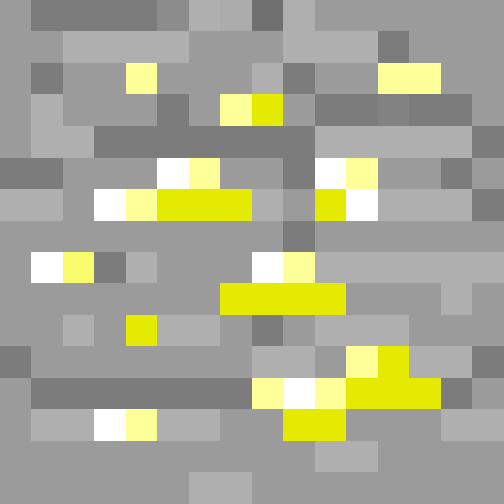
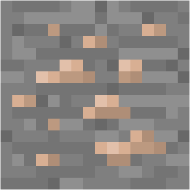

Изумруд в майнкрафте — материал, добываемый из изумрудной руды и
используемый для торговли с деревенскими жителями и странствующими торговцами.

Лазурит — это руда, добавленная в игру в обновлении Beta 1.2. Как и все
неметаллические руды, этот блок не требует переплавки для последующего использования. Из
руды выпадает опыт и 4—9 штук лазурита,
который используется для создания красителей, крафта лазуритового блока и зачаровывания
предметов.

Золотая руда обычно генерируется в виде скоплений, состоящих из одного —
девяти блоков. Выпадающие при добыче руды необработанное золото можно переплавить в печи
для получения золотого слитка.

Redstone Ore или красная руда. Эта руда служит источником красной пыли,
которая используется при создании различных схем, при крафте многих предметов и блоков,
а также в зельеварении как компонент, продлевающий действие зелий.

Железная руда — это руда, появляющаяся под землёй. Она является
источником необработанного железа, которое можно выплавить в железные слитки.